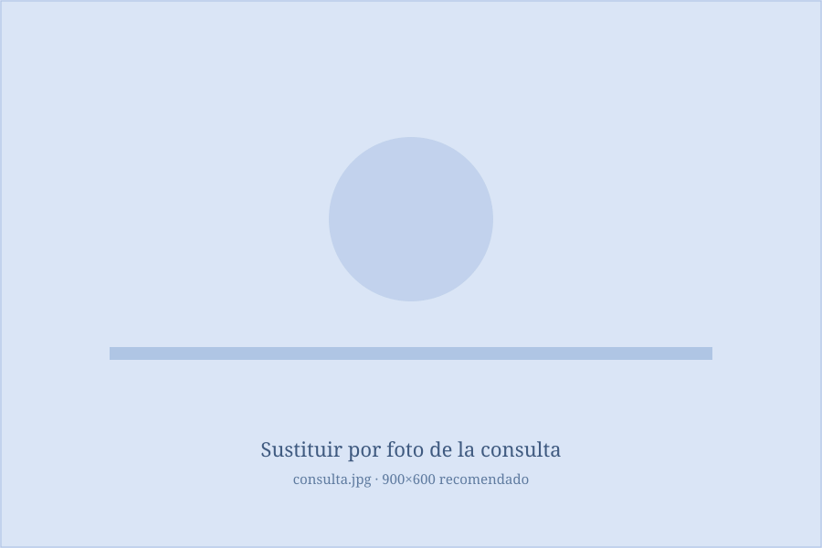

Un espacio seguro para entender lo que te preocupa
Concibo el espacio terapéutico como un lugar seguro, donde tú eres el/la protagonista. En este espacio, le daremos sentido a aquello que te preocupa, explorando tanto tu situación actual como tu historia de vida para comprender el contexto en el que surge tu malestar.
A partir de ahí, teniendo presentes tus objetivos y aquello que es importante para ti, trabajaremos para acercarte a la vida que deseas construir. Sin perder de vista que las emociones difíciles forman parte de la experiencia humana, aprenderemos a relacionarnos con ellas de una manera que no te impida avanzar.
¿Me permites acompañarte en el camino de tu vida?

Formación continua al servicio de cada proceso
Mi pasión por entender el mundo en general, y el comportamiento humano en particular, me llevaron a estudiar psicología en la Universidad Complutense de Madrid, con el ánimo de comprender por qué somos cómo somos, por qué nos comportamos como lo hacemos.
Esta insaciable curiosidad me llevó a adentrarme en el Análisis de Conducta, como forma de acercarme minuciosamente al estudio del funcionamiento humano. Lo hice gracias al Máster de Análisis de Conducta de la Universidad Autónoma de Madrid, donde también cursé el Máster de Psicología General Sanitaria, gracias al cual obtuve la habilitación necesaria para ejercer como terapeuta.
Desde entonces he mantenido un firme compromiso con mi formación continua. Además de actualizarme de manera constante, he ampliado mi especialización con el Curso de Experto en Habilidades Terapéuticas en Terapia de Aceptación y Compromiso (ACT), entre otras formaciones orientadas a ofrecer una atención cada vez más rigurosa y eficaz.
Más allá de la formación, considero que la calidad del proceso terapéutico se sostiene tanto en el conocimiento técnico como en la relación que se construye durante el acompañamiento. La curiosidad por comprender cada historia y el compromiso con quienes confían en mí guían mi forma de trabajar.
Disfruto profundamente de cada sesión y continúo aprendiendo con cada persona que acompaño. Mi objetivo es ofrecer un espacio de confianza desde el que podamos avanzar juntos hacia una vida más plena y coherente con aquello que realmente es importante para ti.
Áreas de trabajo
Ansiedad generalizada y específica
La ansiedad puede llegar a ocupar demasiado espacio en tu vida, ya sea en forma de preocupación constante o asociada a situaciones concretas, como hablar en público, relacionarte con otras personas, conducir o volar. Trabajaremos para que deje de marcar el rumbo y puedas volver a dirigir tus pasos hacia aquello que es importante para ti.
Bajo estado de ánimo / depresión
Cuando el desánimo o la apatía se instalan, es fácil desconectar de aquello que da sentido a la vida. La terapia busca ayudarte a recuperar esa conexión, incluso en presencia del malestar.
Baja autoestima
Más que aprender a gustarte siempre, trabajaremos para transformar la relación que mantienes contigo y que tu autocrítica deje de limitar la vida que quieres construir.
Desarrollo personal
La terapia no solo sirve para aliviar el sufrimiento, sino también para conocerte mejor, desarrollar nuevas habilidades y vivir de una manera más coherente con tus valores.
Duelo
Toda pérdida implica adaptarse a una nueva realidad. Te acompañaré para atravesar ese proceso respetando tu ritmo y haciendo espacio a las emociones que aparezcan.
Fobias
El miedo puede acabar reduciendo tu mundo. Trabajaremos para recuperar la libertad de acercarte a aquellas situaciones que hoy evitas.
Hipocondría
La preocupación constante por la salud puede hacer que la vida gire en torno a la incertidumbre. Aprenderemos a relacionarnos de otra manera con esos pensamientos y sensaciones.
Nuevas tecnologías
Cuando el uso de la tecnología deja de ser una elección y empieza a dirigir tu tiempo y tu atención, podemos trabajar para recuperar un equilibrio más saludable.
Psicología deportiva
El rendimiento también depende de cómo nos relacionamos con la presión, el error o la exigencia. Entrenaremos habilidades psicológicas para competir con mayor flexibilidad y eficacia.
Problemas en el contexto laboral
El trabajo puede convertirse en una fuente importante de malestar. Exploraremos nuevas formas de afrontar esas dificultades sin perder de vista aquello que es importante para ti.
Problemas de pareja (terapia individual)
Las relaciones reflejan muchos de nuestros patrones de comportamiento. Comprenderlos te permitirá construir vínculos más sanos y acordes con lo que buscas.
Terapia de pareja
La terapia ofrece un espacio para comprender las dificultades de la relación, mejorar la comunicación y encontrar nuevas maneras de afrontar juntos los conflictos.
Trastornos de la Conducta Alimentaria
La relación con la comida y con el propio cuerpo puede llegar a ocupar demasiado espacio. Trabajaremos para recuperar una vida más libre, flexible y guiada por tus valores.
Terapia sexual
Las dificultades relacionadas con la sexualidad pueden generar malestar, inseguridad o afectar a la relación de pareja. La terapia ofrece un espacio seguro y libre de juicios para comprender lo que está ocurriendo y construir una vivencia de la sexualidad más satisfactoria y acorde con tus necesidades.
Trauma y estrés postraumático
Las experiencias difíciles no tienen por qué definir tu presente. La terapia te ayudará a integrar lo vivido y a avanzar hacia la vida que deseas construir.
«Lo importante no es solo qué te ocurre, sino cómo has aprendido a responder a ello y si esas respuestas te están acercando o alejando de la vida que deseas vivir.»
El trabajo terapéutico desde una visión contextual no entiende el malestar como algo que aparece porque sí o como un conjunto de síntomas que simplemente hay que eliminar. Para comprender lo que te ocurre es necesario conocer tu historia, las circunstancias que has vivido y la función que cumplen las formas en las que has aprendido a afrontar las dificultades.
Muchas de esas estrategias fueron útiles en algún momento e incluso te ayudaron a salir adelante. Sin embargo, es posible que hoy estén manteniendo el problema o limitando la vida que quieres construir.
Por eso, en terapia no solo buscaremos aliviar el sufrimiento, sino también comprender cómo funciona, desarrollar nuevas formas de responder a las dificultades y ayudarte a construir una vida más flexible, plena y coherente con aquello que es importante para ti.

Un trabajo en equipo
La terapia es un trabajo en equipo y tú eres quien desempeña el papel principal. Tu implicación, tanto dentro como fuera de las sesiones, será fundamental para favorecer el cambio. Mi labor consiste en acompañarte, ayudarte a descubrir tus propios recursos y ofrecerte las herramientas necesarias para avanzar.
También espero que podamos construir una relación basada en la confianza, la honestidad y la colaboración. Quiero que puedas expresar con libertad cómo estás viviendo la terapia, qué te ayuda, qué dudas tienes o si hay algo que no termina de encajarte. Hablar de ello forma parte del proceso terapéutico.
Es normal que durante la terapia aparezcan emociones difíciles o momentos de incertidumbre. Avanzaremos a tu ritmo, entendiendo que el cambio rara vez es lineal y que cada paso, incluso los más difíciles, puede formar parte del camino hacia una vida más plena.
Modalidades y precios
Ofrezco servicio de terapia psicológica tanto online, como presencial en Bilbao (dirección a confirmar).
Bono de 4 sesiones por 220 €.
¿La terapia online funciona?
La terapia online no es un impedimento para que la terapia sea eficaz y de calidad. Además, permite acceder a la ayuda profesional desde cualquier lugar, ahorrando desplazamientos y facilitando la continuidad del proceso, incluso cuando cambian tus circunstancias.
Lo más importante no es el lugar desde el que nos conectemos, sino el vínculo terapéutico que construyamos y el trabajo que realicemos juntos durante el proceso.
Muchas personas llegan con dudas sobre la terapia online y, tras unas pocas sesiones, descubren que la pantalla deja de ser importante. Lo que realmente marca la diferencia es sentirse escuchado, comprendido y acompañado.
Lo que cuentan quienes han pasado por consulta
«Estuve un corto período de tiempo haciendo terapia con Alonso, y a pesar de la diferencia generacional me sentí, desde el primer momento, escuchada y cómoda al hablar de sentimientos. Lo tendré siempre como referente. Gracias.»
«Iba buscando sanar y lo he conseguido gracias a Alonso. A quien lea esta reseña: rompe el miedo de ir a terapia, porque de verdad, merece la pena. Es un auténtico profesional con un futuro muy prometedor. Volveré, ya que esto es un camino en el que hay que ir sin prisa.»
«Tu sensibilidad y el cariño con el que me trataste... sentía muchas veces que vivías mi historia y tu emoción. También vi tus ojos brillar, y eso hacía que yo también me sintiera más cómoda.»
Hablemos
Contestaré a la máxima brevedad posible para que podamos agendar una cita, conocernos y comenzar el proceso de cambio hacia esa vida que quieres vivir.